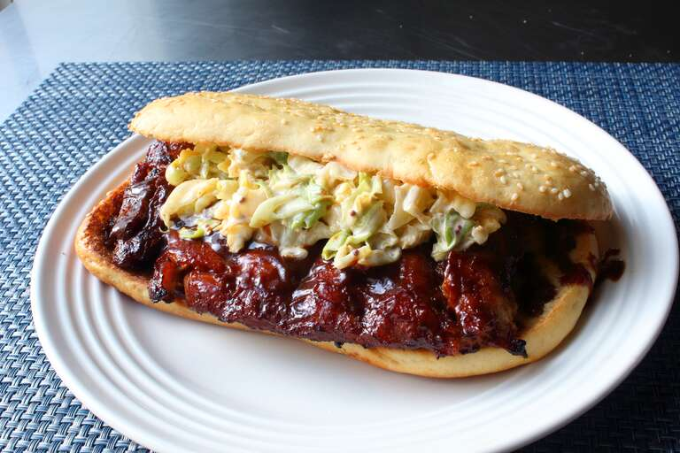

Copycat Sandwich

Description
The idea for a boneless baby back rib sandwich, the only downside
being that they use about 50 myystery ingredients-- ribs not necessarily
being one of them. That's why you should try This
easy homemade version with real ribs; simply bake, chill, cut,sauce, finish on the grill
and boom! one of the best sandwiches i've ever had.
ingredients
- 2 racks baby back pork ribs
- 1 cup barbecue sauce, divided
- 4 sesame hamburger rolls, split and toasted
- 1 cup coleslaw
Steps for Prepare
- Preheat the oven to 325 degrees F(165 degrees C).
- Mix salt, brown suger, chili powder, pepper, cumin,
and
cayenne together for the rub.
- Place ribs on foil-lined baking sheet. Season both sides generously
with
some of the rub. Reserve remaining rub for another use. Cover
top with parchment paper and wrap foil over the edge. Cover the whole
baking sheet with another large sheet of foil, sealing in the sides.
- Bake in the preheated oven until tender, about 2 hours and 45 minutes